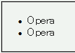
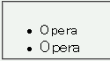

font-sizeプロパティの値をem単位で指定したときと%単位で指定したときとで実際のフォントサイズが異なる場合があり、%値指定の場合のフォントサイズが小さくなる。
(7.x) font-sizeプロパティの%値指定ではフォントサイズをある大きさよりも大きくすることができない。
<ul style="font-size:16px;"> <li style="font-size:110%;">Opera</li> <li style="font-size:1.1em;">Opera</li> </ul>
2つのli要素のフォントサイズは同じ大きさになるはずです。
WinIE6.0標準モード
Opera7.23標準モード
Opera7ではfont-sizeプロパティを%単位の値で指定した場合、500%を超える値を指定しても表示上は500%相当のフォントサイズになります。以下の例をOpera7で表示すると、「6」から「8」が「5」と同じフォントサイズで表示されます。
<p> <span style="font-size:100%;">1</span> <span style="font-size:200%;">2</span> <span style="font-size:300%;">3</span> <span style="font-size:400%;">4</span> <span style="font-size:500%;">5</span> <span style="font-size:600%;">6</span> <span style="font-size:700%;">7</span> <span style="font-size:800%;">8</span> </p>
1 2 3 4 5 6 7 8